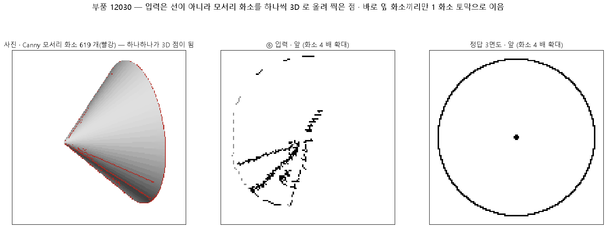
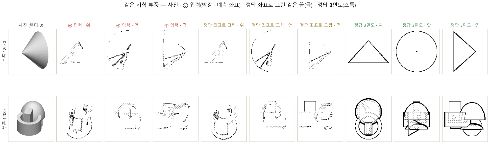
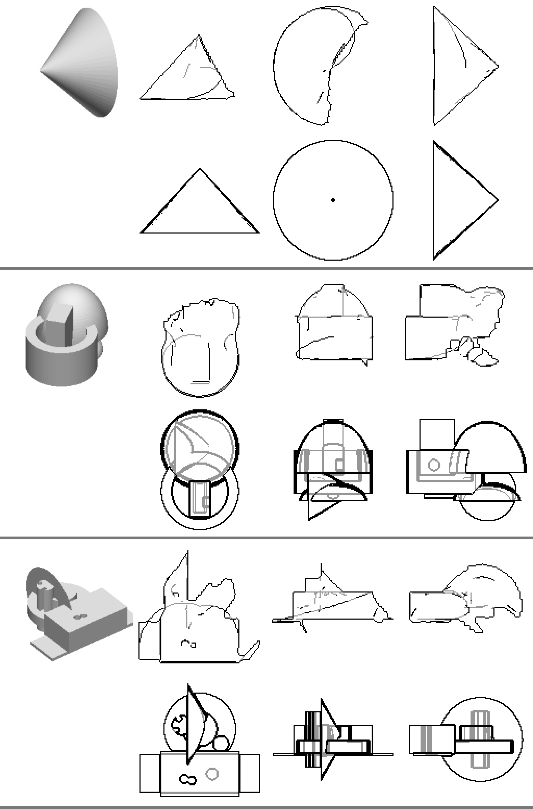
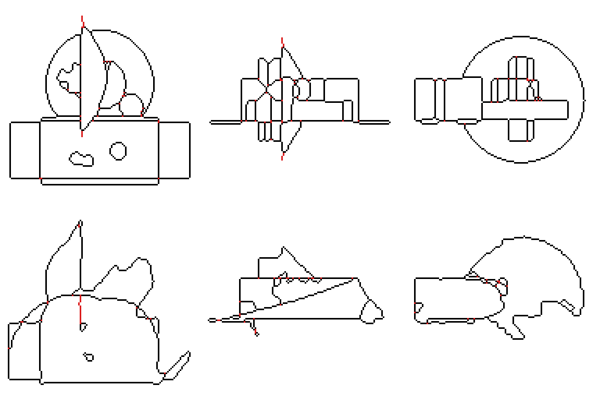

tr205 선 단위 그리기 — 사진 한 장에서 기하로 3면도를 뽑을 수 있나 (11-16 · 선그리기205.py · 손으로 정리 · 실패)
분석
한 줄로
물음: ⑥ 입력(사진 → 193b 좌표 → 3면도)은 선이 아니라 점의 모임이다. 점 대신 선 단위(직선 · 원호)로 그리고 닫힌 꼴로 만들면 쓸 만한 3면도가 되나?
답: 아니다. 선은 이어지고 닫힘도 맞출 수 있었지만(매달린 선 비율 0.82 → 0.03 · 정답 0.04), 닫힌 영역이 부품의 면이 아니라 사진에 보이는 부분의 바깥 덩어리다. 원뿔 같은 몸 1 개만 정답 꼴에 가깝고 여러 몸 부품은 아무것도 표현하지 못한다. 판정은 실패다. 사진 한 장에서 기하로 3면도를 뽑는 길은 여기서 접는다.
왜 이 판을 했나
11-16 사용자: 「선이 아니라 그냥 점을 모아놓은 구조잖아」. 확인해 보니 모델195.그리기3 은 사진 Canny 모서리 화소를 하나씩 3D 로 올려 8 방향 이웃끼리 1 화소 토막으로 잇는다(원뿔 12030: 모서리 화소 619 개 · 음영 띠도 모서리로 잡힘 · 밑면 원은 거의 없음). 같은 지적을 11-14 에도 받았는데(「점이 아니라 직선 또는 곡선」), 그때 직선 · 원호 맞춤의 버그를 고치지 않고 화소 F1 이 높은 「이웃 잇기」를 골랐다(8d9cfd6 · 제 실수).


바꾼 것 하나
그리기 방식만. ① 모서리 고르기(테두리 · 가림 · 접힘만 · 둥근 면 윤곽과 음영은 버림 · 사진 방향은 좌표로 추정) → ② 사슬 → ③ 3D 직선 · 원호 맞춤 → ④ 면마다 바깥 윤곽 → (4 판) 끝점 잇기 + 가지 치기로 닫기. 정답 좌표 · 개발 부품으로만 봤다(학습 없음).
결과

| 그림(정답 좌표 · 개발) | 매달린 선 비율(40 × 3 면) | 끝점 가운데(99 × 3) | 정밀 · 재현(2 px) |
|---|---|---|---|
| 정답(보이는 선 + 숨은선 · 실선) | 0.037 | 1 | — |
| 지금 점 잇기(⑥ 입력) | 0.819 | 36 | 0.85 · 0.47 |
| 새 선 3 판 | 0.203 | 11 | 0.84 · 0.58 |
| 새 선 닫음 4 판 | 0.031 | 0 | 0.83 · 0.53 |
매달린 선 = 선 화소 양쪽이 같은 면(아무것도 안 나눔). 끝점은 작은 고리로 끝나는 선을 놓칠 수 있어 매달린 선 비율이 주된 자다.

왜 이렇게 나왔나
확인한 것
- ⑥ 이 보는 정답 그림(
그림.npz)도 숨은선을 점선으로 찍어 열려 있다: 끝점 가운데 32 · 0 인 면 10 % (보이는 선만이면 0 · 58 %). - 닫음 4 판은 닫혀 있다(매달린 선 0.031 ≈ 정답 0.037). 그런데 12017 위 모습은 원 · 지느러미 · ∞ 구멍 · 옆 상자 대신 가시 달린 덩어리 하나, 앞 모습에는 정답에 없는 긴 대각선(닫기 전부터 있음 · 원인 모름), 옆 모습은 원 대신 반쪽 덩어리다.
- 사진 한 장에는 뒤쪽 · 가려진 몸이 없다. 기하로 올릴 수 있는 것은 보이는 쪽뿐이다.
짐작 (아직 확인 안 함)
- 앞 모습 대각선은 사진에서 일직선으로 이어 보이는 두 모서리(서로 다른 3D 선)를 한 사슬로 묶어 맞춘 것일 수 있다.
한계
- 정답 좌표로만 봤다(193b 예측 좌표는 더 나쁨). 개발 부품 · 몇 개만 그림으로 봤다.
배운 것과 다음
안 보이는 쪽은 기하로 만들 수 없다 — 모델이 추론해야 한다.
- 이 길(사진 → 기하 3면도)은 접는다.
- 정답 그림을 쓸 때는 점선이 아니라 닫힌 꼴(보 · 숨 실선 두 채널)로.
- 다음은 tr206(단면 생성 → 합치기).
제 실수 (이 판)
- 축소 그림만 보고 「선 그림으로 읽힌다」(3 판) · 「끝점 0 · 정답 쪽 꼴」(4 판) · 「정답은 닫힘 · 끝점은 뾰족한 끝」 이라 보고했다. 확대해 보니 셋 다 틀렸다.
- 닫힘 숫자를 맞추려고 선을 지웠다(4 판).
- 짐작 셋(계단꼴 끝점을 놓침 · 이을 때 작은 고리 · 가짜 닫힘)을 말했다가 셋 다 뒤집혔다.